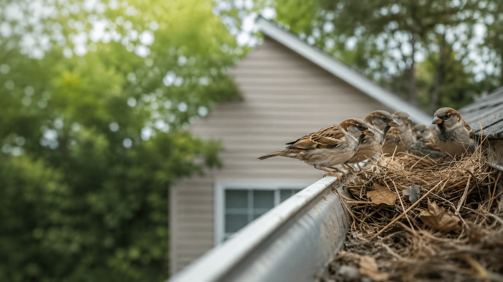
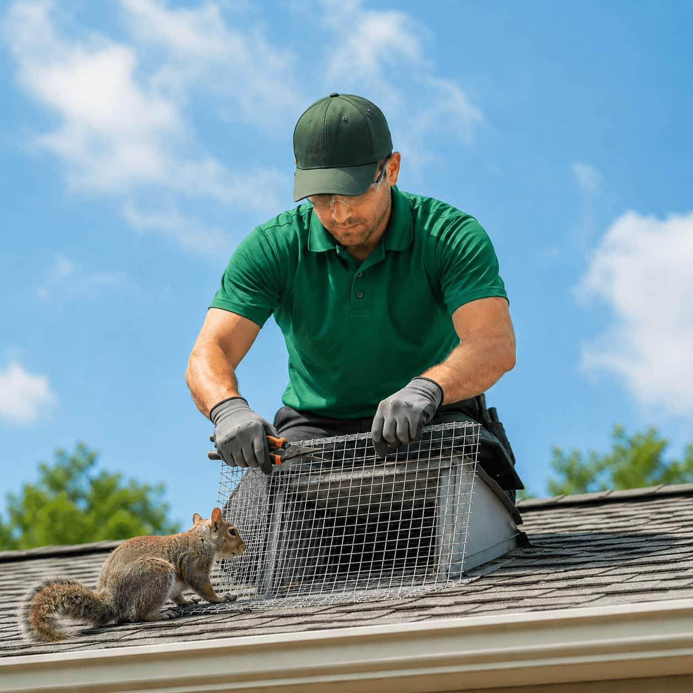

Start with nesting signs
Compare providers based on nest location, vent concerns, ledges, or roofline activity.
Bird provider comparison
Explore local provider options for bird nesting, vents, rooflines, ledges, droppings, and prevention-focused service categories.
Bird activity
Bird concerns can involve nesting materials, vents, ledges, rooflines, droppings, blocked openings, and prevention-related questions.
WILDGUARD helps homeowners compare local providers who list bird-related removal, inspection, prevention, deterrent, and exclusion service categories. Use this page to organize questions before choosing a local provider option.
Compare providers based on nest location, vent concerns, ledges, or roofline activity.
Review whether providers discuss vents, soffits, exterior gaps, and blocked access areas.
Bird activity may require prevention-focused questions around nesting and repeat access.

Common signs
These signs can help homeowners decide whether bird-related service categories are relevant.
Nests near vents, ledges, rooflines, gutters, chimneys, or exterior fixtures.
Activity around dryer vents, attic vents, bathroom vents, or other openings.
Repeated movement around gutters, fascia, eaves, soffits, and roof edges.
Droppings around ledges, decks, patios, walkways, or exterior walls.
Nesting material that appears to block vents, gutters, or exterior access points.
Bird activity returning to the same exterior areas over time.
Comparison path
Use a simple provider comparison path for nesting, vent, roofline, and prevention questions.
Note nesting areas, droppings, blocked vents, ledges, or repeated exterior activity.
Review providers that list bird-related removal, inspection, or prevention categories.
Ask whether vents, ledges, gutters, rooflines, and exterior openings can be reviewed.
Compare deterrent, sealing, cleanup-related, or prevention-focused provider options.

Nesting and prevention
Bird-related service comparison may include questions about nest location, vent access, droppings, exterior ledges, blocked openings, and prevention options.
Review vents, soffits, ledges, gutters, rooflines, and exterior openings.
Ask how providers evaluate nesting material and blocked areas.
Compare prevention, deterrent, and exclusion-related provider options.
Bird FAQ
Helpful questions to consider when comparing local bird provider options.
Common signs include visible nesting, droppings, blocked vents, repeated activity around rooflines, ledges, gutters, or exterior openings.
Yes. Vents are common areas to review. Ask whether providers evaluate attic vents, dryer vents, bathroom vents, soffits, and other exterior openings.
It can return if the area remains attractive or accessible. Ask providers about prevention, deterrent, exclusion, or repeat nesting questions.
No. WILDGUARD is an independent comparison platform that helps homeowners explore provider options. Providers are independent companies.
Compare options
Start with the nesting or vent concern you are seeing and compare local provider options for inspection, prevention, and removal-related service categories.